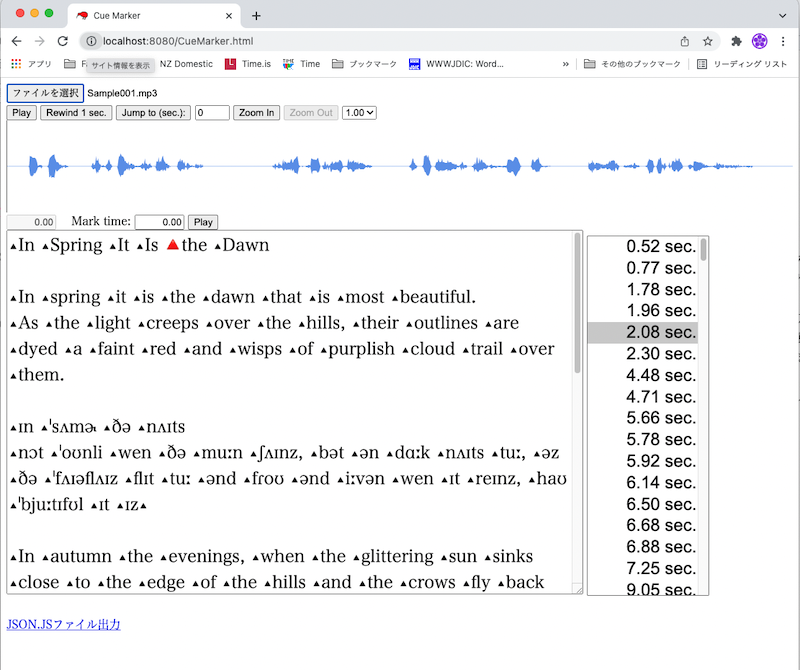

cueMarkerの使い方
各部の説明

最上部にあるボタンは、音声ファイルやスクリプト（テキスト）ファイル、JSON.JS（音声／スクリプト／キュー情報をまとめた出力）ファイルを読み込ませるためのボタンです。
その下のラインに配置されているコントロールは左から以下の通りになっています。
- Play： このボタンを押すと波形上の縦棒表示位置から再生を開始し、もう一度押すと再生を停止します。なお、このボタンを押して再生を開始すると、下のMark timeエリアに再生開始時間がコピーされます。
- Rewind 1 sec.： 波形上の縦棒の位置を1秒分、前に戻すボタンです。再生中でも機能します。
- Jump to (sec.)： このボタンを押すと、右横のテキストボックスで指定した時間のところに縦棒が移動します。
- Zoom In： 波形をズームイン（拡大）します。
- Zoom Out： 波形をズームアウトします。
- 1.00： 再生速度変更用のドロップダウンボックスです。
その下には波形表示エリアがあります。
その下にあるコントロールは左から以下の通りになっています。
- 左端の表示エリア： 波形上の縦棒が指している時間です。
- Mark time： 下のスクリプトエリアでマウスをクリックすると、ここに表示されている時間がキュー情報としてスクリプトの該当位置に書き込まれます。なお、この値は上のPlayボタンを使って再生を開始した際にその開始時間がコピーされる他、キーボードからの直接入力、インクリメント／デクリメント入力（後述）に対応しています。
- Play： Mark timeからの再生を開始します。もう一度押すと停止します。何度もMark timeからの再生を繰り返せます。
その下はスクリプトが表示されるエリア（クリックでキューを打ち込めます）と、その横にキューを打ち込んだ時間のリストが表示されます。このリストを選択した状態で、以下のコマンドを実行できます。
- DELキー： 選択しているキューを削除します。
- スペースキー：そのキューから次のキューまでを部分再生します。
- ↓キー： 次のキューに移動します。
- ↑キー：前のキューに移動します。
- ←キー：そのキューの時間を0.01秒減らします（直前のキュー以前には設定できません）。
- Shift+←キー：そのキューの時間を0.1秒減らします（直前のキュー以前には設定できません）。
- →キー：そのキューの時間を0.01秒増やします（直後のキュー以降には設定できません）。
- Shift+→キー：そのキューの時間を0.1秒増やします（直後のキュー以降には設定できません）。
- 1キー：Mark timeを1秒増やします（インクリメント入力）。
- Shift+1キー：Mark timeを1秒減らします（デクリメント入力）。
- 2キー：Mark timeを2秒増やします（インクリメント入力）。
- Shift+2キー：Mark timeを2秒減らします（デクリメント入力）。
- 3キー：Mark timeを3秒増やします（インクリメント入力）。
- Shift+3キー：Mark timeを3秒減らします（デクリメント入力）。
最下部はJSON.JSファイルを出力するためのリンクです。
よくある使い方
- 最上部のファイル入力ボタンから、スクリプトファイルと音声ファイルを入力する。あるいはJSON.JSファイルを編集する場合には、JSON.JSファイルと音声ファイルを入力する[*1]。
- 波形と《上の方の》Playボタンを使って、キューのタイミングを特定する。この作業を満足行くまで繰り返した後、《下の方の》Playボタンを押して最終確認した後、テキストエリアをクリックしてキューを埋め込む。
- キューの位置が良くない場合は、時間のリストで該当キューを選択して（直後だと選択されているはず）DELキーを押し、やり直す。
- 上記作業2〜3を繰り返して、完了したらJSON.JSリンクをクリックしてファイルを出力する。
[*1] ちょっとした言い訳： このプログラムはローカル環境上でウェブサーバーを実行しつつ動作させることを念頭に置いて作っているのですが、ウェブサーバーを動かさない素のローカル環境上や、インターネット接続でも制限付きながら実行できるようになっています。その制約とは、「JSON.JSファイルを入力して作業する場合であっても（JSON.JSファイルに音声ファイルのファイル名が入っているにも関わらず）別途音声ファイルを入力しなければならないというものです。
あるいは、、、（1秒毎の固定長キューの場合）
- 最上部のファイル入力ボタンから、スクリプトファイルと音声ファイルを入力する。あるいはJSON.JSファイルを編集する場合には、JSON.JSファイルと音声ファイルを入力する[*1]。
- 《下の方の》Playボタンを押し、聞こえてきた音のところにキューを挿入する。
- キューの位置が良くない場合は、時間のリストで該当キューを選択して（直後だと選択されているはず）DELキーを押し、やり直す。
- 「1」キーを入力する。
- 上記作業2〜4を繰り返して、完了したらJSON.JSリンクをクリックしてファイルを出力する。